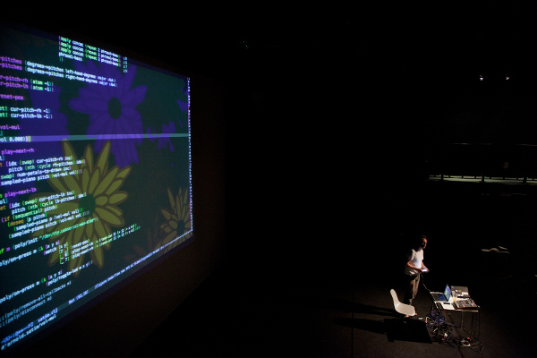

13-15th July 2015, University of Leeds, UK
The first International Conference on Live Coding took place in the University of Leeds, UK, funded by the Arts and Humanities Research Council (AHRC), and chaired by Alex McLean, Thor Magnusson, Kia Ng, Shelly Knotts and Joanne Armitage. Papers are available open access, and videos of the talks and many of the performances are now online.
We are pleased to announce that the second edition will take place from 12-15th October 2016 in McMaster University, Canada, chaired by David Ogborn, Graham Wakefield, Christina Baade, Kate Sicchio, and Tanya Goncalves. The full call for proposals has now been announced.
Live coding is where changes to a running computer program are made by editing the underlying source code, with live feedback through the programming environment and/or via the program's output. Since 2003, a growing movement has explored live coding to create live music and visuals, and in recent years latent activity in software engineering has seen a burst of new research directions and tools in live programming language design. Wider still, teachers, choreographers, psychologists, ethnographers, technologists and many other disciplines have seen the potential that live coding has in throwing new light on research questions, problems, and ways of working.
 Alexandra Cardenas, GEIGER Festival, Göteburg, Nov 2014. Photo: Ruud Gielens
Alexandra Cardenas, GEIGER Festival, Göteburg, Nov 2014. Photo: Ruud Gielens
This conference follows a long line of international events on liveness in computer programming; the Changing Grammars live audio programming symposium in Hamburg 2004, the LOSS Livecode festival in Sheffield 2007, the annual Vivo festivals in Mexico City from 2012, the live.code.festival in Karlsruhe, the LIVE workshop at ICSE on live programming, and Dagstuhl Seminar 13382 on Collaboration and Learning through Live Coding in 2013, the Breathing Code conference in Frankfurt 2015, as well as numerous workshops, concerts, algoraves and conference special sessions. It also follows a series of Live Coding Research Network symposia on diverse topics, and the activities of the TOPLAP community since 2004.
 Sam Aaron, Live Notation Unit, Arnolfini, July 2012. Photo: pixelwitch
This conference is a confluence for all this work, aiming to establish live coding as an interdisciplinary field, exploring liveness in symbolic abstractions, and understanding the perceptual, creative, productive, philosophical and cultural consequences.